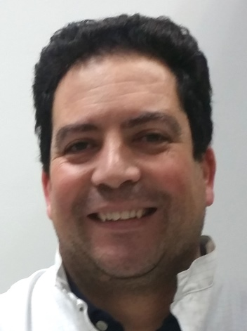
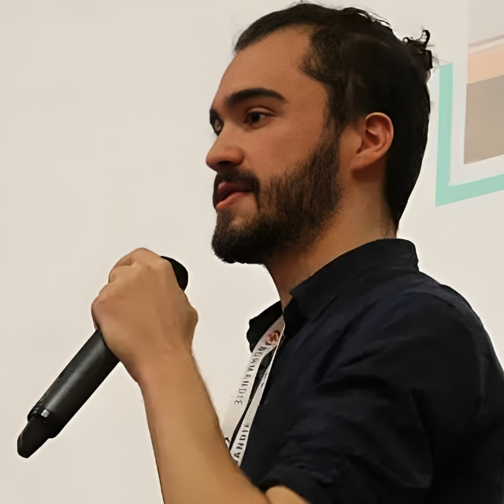
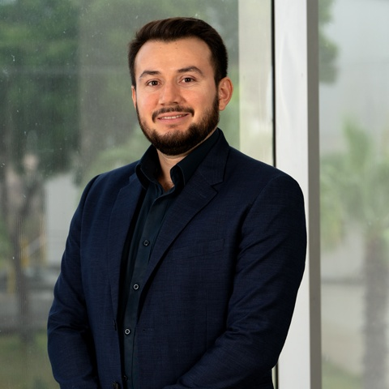
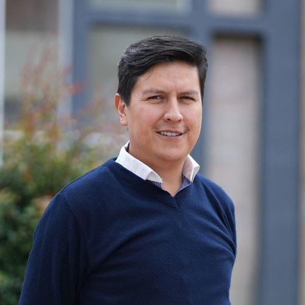
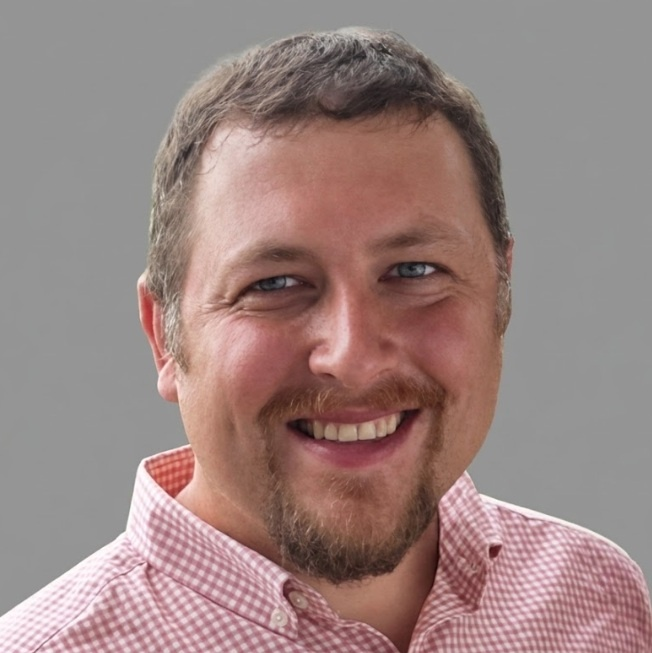
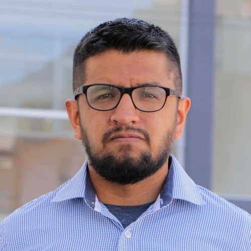
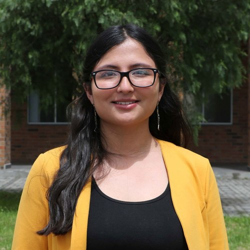
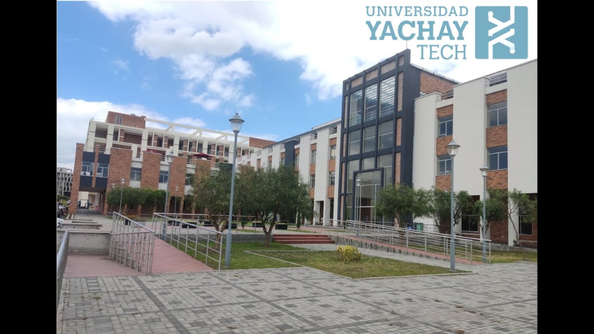

01
Materiales Avanzados
Películas Delgadas y Sputtering
Física fundamental de deposición por magnetron sputtering en ángulo oblicuo (OAD/GLAD) y crecimiento de nanoestructuras columnares.
La primera cumbre internacional de nanotecnología e inteligencia artificial en la Ciudad del Conocimiento Yachay.
El IEEE Nanotechnology Council Student Branch Chapter de Yachay Tech organiza este encuentro para consolidar la primera generación de ingenieros en nanotecnología del Ecuador con la vanguardia internacional en materiales avanzados, inteligencia artificial y biotecnología.
Física fundamental de deposición por magnetron sputtering en ángulo oblicuo (OAD/GLAD) y crecimiento de nanoestructuras columnares.
Prevención pasiva de biopelículas en implantes ortopédicos de titanio grado médico sin uso de agentes antibióticos.
Sistemas multi-agente para experimentación física en bucle cerrado (closed-loop) y dinámicas sociales de agentes de IA en ciencia biomédica.
Del laboratorio académico a la spin-off: La experiencia de Nanostine escalando patentes hacia soluciones industriales reales.
Científicos e innovadores de referencia internacional reunidos en Yachay Tech para conectar la investigación de frontera en materiales avanzados, inteligencia artificial biomédica y transferencia tecnológica con la primera generación de ingenieros en nanotecnología.

Investigador Científico en el Instituto de Micro y Nanotecnología (IMN-CNM, CSIC, Madrid). Co-fundador de Nanostine S.L. Pionero en recubrimientos nanoestructurados columnares de titanio con propiedades antibacterianas pasivas.
Nanostructured Columnar Thin Films & Antibacterial Surfaces
From the Academic Laboratory to Deep-Tech Spin-Offs: Nanostine

Ingeniero de aprendizaje automático y arquitecto de sistemas de IA, fundador de DENEM Labs y especialista en laboratorios autónomos de experimentación física y sociedades de agentes de inteligencia artificial.
Autonomous Nanotechnology Laboratory: Closed-Loop AI
Societies of AI Agents: Influence, Reputation & Emergence

Líder en ingeniería biomédica y presidente de la sociedad IEEE EMBS en Ecuador. Impulsor de la integración de biosensores y tecnologías de instrumentación en el sistema de salud ecuatoriano.
Fronteras en Ingeniería Biomédica y Ecosistema de Salud en Ecuador

Investigador postdoctoral de Yachay Tech especializado en métodos avanzados de caracterización en nanociencia, microscopía electrónica y análisis estructural en centros de investigación en Alemania.
Avances Internacionales en Caracterización y Métodos en Nanociencia

Docente-Investigador en la Escuela de Ciencias Físicas y Nanotecnología de Yachay Tech. Responsable de líneas estratégicas en desarrollo de nanomateriales y prototipado local.
Líneas de Investigación en Nanomateriales y Fabricación Local
Docente e investigador en la Escuela de Ciencias Físicas y Nanotecnología de Yachay Tech. Especialista en síntesis física y química de nanoestructuras, caracterización estructural y proyectos de transferencia tecnológica.
Desarrollo de Nanotecnología y Aplicaciones Regionales

Docente e investigador en la Escuela de Ciencias Físicas y Nanotecnología de Yachay Tech. Especialista internacional en síntesis coloidal, fotoquímica ultrarrápida, luminiscencia, puntos cuánticos y nanomateriales funcionales.
Introduction to Nanotechnology

Investigador en nanotecnología en la Escuela de Ciencias Físicas y Nanotecnología de Yachay Tech, centrado en caracterización de nuevos materiales, aplicaciones en almacenamiento y optimización de dispositivos electroquímicos.
Innovación en Materiales Nanoestructurados

Química e investigadora en la Escuela de Ciencias Físicas y Nanotecnología de Yachay Tech. Especialista en electrolitos biopoliméricos nanocompuestos, hidrogeles de quitosano y baterías de zinc-aire sostenibles.
Electrolitos Nanocompuestos para Baterías de Zinc-Aire
Sesiones técnicas, conferencias plenarias, intermedios artísticos y talleres prácticos estructurados para estudiantes e investigadores.
Capítulo Estudiantil IEEE NTC & Autoridades de la Universidad Yachay Tech
Dr. José Miguel García-Martín · Instituto de Micro y Nanotecnología (CSIC, Madrid)
Dr. José Torres · Investigador Postdoctoral (Alemania)
Club de Danza Universitaria · Expresión coreográfica tradicional andina y contemporánea
Espacio de hidratación, café y diálogo previo a la Conferencia Magistral
MSc. Simon Heilles · Lead AI Architect en DENEM Labs
Receso oficial para almuerzo y vinculación técnica entre estudiantes, delegaciones y ponentes
Dr. Andrey Mereshchenko · Escuela de Ciencias Físicas y Nanotecnología, Yachay Tech
Dr. Carlos Reinoso · Escuela de Ciencias Físicas y Nanotecnología, Yachay Tech
Sesión técnica interactiva para el desarrollo de competencias de posgrado, investigación aplicada y presentación de posters científicos
Directiva del Capítulo Estudiantil IEEE NTC Yachay Tech
Directiva del Capítulo Estudiantil IEEE NTC Yachay Tech
Dr. José Miguel García-Martín · Co-Fundador de Nanostine & CSIC
Dr. Edwin Valarezo · Presidente de IEEE EMBS Sección Ecuador
Recital musical en vivo al piano (música clásica y fusión contemporánea) & estación de café en el Auditorio Principal
MSc. Simon Heilles · Lead AI Architect (DENEM Labs)
Receso oficial para almuerzo y espacio de vinculación informal en el campus
Dr. Jhonny Chimborazo · Escuela de Ciencias Físicas y Nanotecnología, Yachay Tech
Reconocimiento a MSc. Simon Heilles, Dr. José Miguel García-Martín, ponentes invitados y premiación oficial a los ganadores del Workshop & Posters del Día 1
MSc. María Fernanda Bósquez · Escuela de Ciencias Físicas y Nanotecnología
Ing. Benjamín Pusay · Investigador en Materiales Avanzados
Colección vanguardista de nanotecnología y textil por diseñadora Wendy, clausura institucional y entrega de certificados IEEE NTC
Informe oficial consolidado de tarifas, capacidad hotelera y paquetes de referencia para asistentes y delegaciones durante NANOBRIDGE YT 2026.
| Hotel / Hostal | Modalidad de Habitación | Tarifa / Noche | Estadía 2 Noches | Estadía 3 Noches | Ubicación & Referencia |
|---|---|---|---|---|---|
| Sueños de Primavera | Económico Compartido: Matrimonial para 2 personas | $10 USD/pers. | $20 USD/pers. | $30 USD/pers. | |
| Kampak Wasi | Estándar Delegación: Plaza indiv. en hab. compartida | $12 USD/pers. | $24 USD/pers. | $36 USD/pers. | |
| Sueños de Primavera | Estándar Individual: Cama 1½ plaza / Matrimonial individual | $12 USD/pers. | $24 USD/pers. | $36 USD/pers. | |
| Strega | Superior Grupal: Suite, doble y triple campestre | $15 USD/pers. | $30 USD/pers. | $45 USD/pers. |
Paquete Económico
Modalidad matrimonial compartida (2 personas por cama, $20/pareja/noche).
Paquete Estándar A
Plaza individual por persona según distribución oficial de habitaciones (101-202).
Paquete Estándar B
Cama individual (1½ plaza) o cama matrimonial usada individualmente por $12.
Superior por Precio
Tarifa grupal de hotel completo para 15 adultos con suite, habitaciones dobles (hasta 4 pers.) y triple (hasta 6 pers.) en entorno campestre.
Ubicada en la Ciudad del Conocimiento en Urcuquí, Imbabura. Primera universidad de investigación intensiva del Ecuador con laboratorios de vanguardia.

Auditorio Principal
Instalaciones acústicas y audiovisuales de alta fidelidad para conferencias magistrales internacionales y transmisiones híbridas en directo.
Laboratorios Experimentales
Entorno de trabajo para el taller NanoSkills con equipamiento de deposición física, microscopías y preparación de muestras.
Ubicación Geográfica
A 2,000 msnm en los Andes ecuatorianos. Clima primaveral templado (15°C - 24°C).
Hacienda San José, San Miguel de Urcuquí, Imbabura, Ecuador · Coordenadas: 0°24'16.4"N 78°10'29.5"W
Participa de manera presencial en el campus de Yachay Tech o conéctate virtualmente a las transmisiones internacionales vía IEEE vTools. Se emitirá certificado con aval de IEEE Nanotechnology Council.